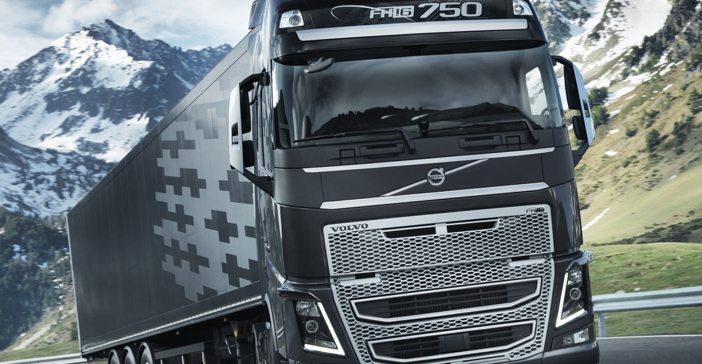
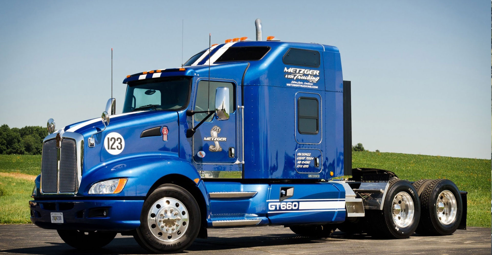
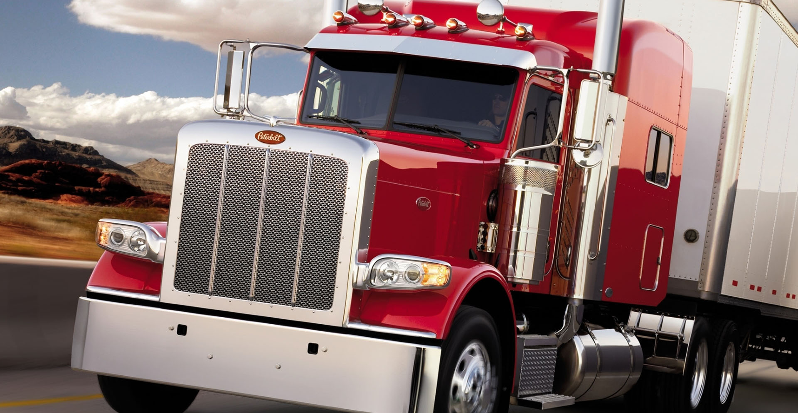
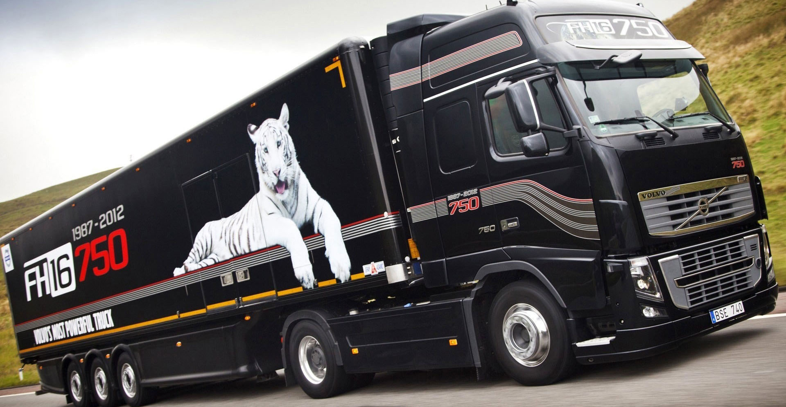

- 
DIESEL Service:
Ремонт топливной аппаратуры дизельных двигателей
- 
DIESEL Service:
Диагностика и ремонт топливных насосов
- 
DIESEL Service:
Ремонт насос-форсунок, плунжерных пар дизелей
- 
DIESEL Service:
Компьютерная диагностика топливной аппаратуры

DIESEL Service:
Ремонт ТНВД (топливных насосов высокого давления)
АВТОРИЗОВАННЫЙ СЕРВИС:
BOSCH DIESEL SERVICE
DELPHI DIESEL SERVICE
О ПРЕДПРИЯТИИ:
В текущий момент ЧП ДИЗЕЛЬ является сертифицированным сервисом BOSCH и DELPHI - крупнейших в мире компаний по производству комплектующих для автомобилей и другой техники. На высоком техническом уровне предприятие также выполняет ремонт дизельных двигателей и топливных систем: DIESEL KIKI, LUCAS, MOTORPAL, ZEXEL, STANADAIN, CATERPILLAR, DOOWAN, YANMAR, ЯЗТА, DETROIT, CUMMINS и других заводов.
DIESEL SERVICE ЭТО:
Предприятие включает в себя 25 специалистов со средним и высшим спец. образованием, которые работают по 10 техническим специальностям.
Мощная производственная база, большой опыт и высокий профессионализм сотрудников позволили изучить технологии диагностики и ремонта практически всей топливной аппаратуры, которая выпускается в мире
УСЛУГИ:
В текущий момент ЧП ДИЗЕЛЬ является сертифицированным сервисом BOSCH и DELPHI - крупнейших в мире компаний по производству комплектующих для автомобилей и другой техники. На высоком техническом уровне предприятие также выполняет ремонт дизельных двигателей и топливных систем: DIESEL KIKI, LUCAS, MOTORPAL, ZEXEL, STANADAIN, CATERPILLAR, DOOWAN, YANMAR, ЯЗТА, DETROIT, CUMMINS и других заводов.
Мы осуществляем ремонт аппаратуры для всех областей Украины таких марок, как ROPA, Komatsu, VALMET, JOHN DEERE, Case, CLAAS, Agrostar, SF 10, JAGUAR, Forshrit, DEUTZ (на ХТЗ 17021), Fendt, ATLAS, HUNTER, NEW HOLLAND, Mamut, МТВ, Dominator, Matrot, Topliner, ZETTOR, Massey ferguson, FORD, Western, MEDION, МТЗ, Кировец (с двигателем ОМ547), ХТЗ (с двигателем Deutz). Также осуществляем диагностику и ремонт автомобилей всех марок и поколений (ЕВРО-1, ЕВРО-2, ЕВРО-3, ЕВРО-4, ЕВРО-5).
ДИЗЕЛЬ выполняет обслуживание и ремонт топливных систем автомобилей Volvo FM-9, FH-12; MAN TGM, TGL, TGA, TGX; Scania 164, 124, 114, T, P, R, HPi; DAF CF, LF, XF; MB Actros, Atego; Iveco Stralis, Eurotech, Cursor 8, 10, 13, Eurostar; Ford; International; Renault DXI, Magnum, Premium DCI; MACK, сельхозтехники отечественного и импортного производства, спецтехники, катеров, яхт с двигателями МВ, Volvo Penta, Cummins, MAN, Toyota, JCB, Mitsubishi, Deutz, Komatsu, Hyundai, Sisu, ROPA.
ДИЗЕЛЬ осуществляет профессиональный ремонт топливных насосов марки BOSCH VP44 для авто: AUDI, FORD, VOLKSWAGEN, OPEL, SKODA, SAAB, BMW, MAN, NISSAN, SUZUKI, MAZDA на стенде BOSCH EPS 815, с помощью которого можно проводить полноценные испытания механической и электронной части с возможностью проводить программирование блока управления